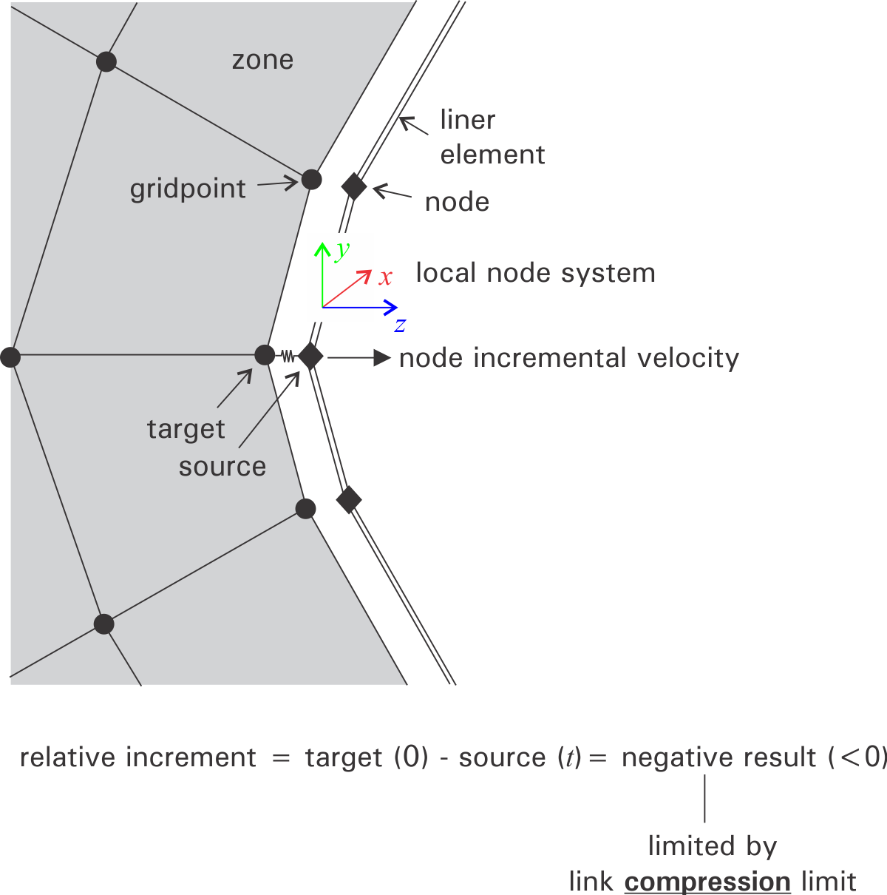

结构单元连接
引言
连接是把源节点与目标相连的对象。目前目标可以是另一个结构节点或一个网格单元，将来可能增加更多目标类型。每个连接使用其源节点的局部系，所有连接性质都相对于该局部系指定。连接实现不同单元类型与网格之间发生的相互作用。多数情况下无需创建或修改连接，因为使用它们的单元会自动创建连接并设置其性质。
不过若希望引入具有完全转动自由的塑性铰（使铰点两侧可发展出两个不同转角），则必须在该点创建两个独立节点，在二者之间创建节点-节点连接，在相应转动自由度中指定法向屈服弹簧，并把该弹簧的刚度与屈服强度设为该塑性铰的相应值。针对这类以及其他更复杂的情形，我们提供以下与连接逻辑的接口。
每个连接对六个自由度（三个平动、三个转动）各有六种可能的附着条件。可能条件为自由（不传递力）、刚性（与目标位置刚性连接）与可变形（依据相对运动由一维力-位移法则产生力）。可变形条件的行为由连接模型控制，目前有四种选项：linear、shear-yield、normal-yield 与 pile-yield。注意一个连接对每个自由度只能有一种条件或模型。刚性连接的递归链式连接是允许的。
对嵌入式衬砌的特殊情形，每个节点可能有两个连接。此时所有连接中每个自由度只允许有一个刚性连接。
注意连接模型性质默认依据与宿主节点相连单元的性质自动赋值。除非相互作用类型不兼容，否则这将覆盖通过命令行或 FISH 手动设置的性质。这在程序执行“几何更新”时发生，即循环开始时，以及大应变模式下循环期间每个更新间隔开始时。因此自定义连接性质最简单的方法是在与宿主节点相连的单元中设置性质。否则用户必须确保在每次更新之后用时机恰当的 FISH 回调覆盖默认值（见 设置FISH回调命令（fish callback） 命令）。
用 group 范围元素选择时，默认情况下只要连接本身、其所连节点或该节点所连任何单元属于该组，就认为该连接是该组成员。可用 by 关键字把该范围限定到特定对象类型。
每当连接尝试与目标网格单元建立连接时，它会搜索非空网格单元，使源节点位于该网格单元边界距离 \(d\) 以内。\(d\) 的取值由网格单元容差的全局值（见 structure link tolerance-contact 命令）乘以网格单元尺寸得到，网格单元尺寸取网格单元包围盒的最大 \(x\)、\(y\) 或 \(z\) 尺寸。但请注意，仅当源节点不在任何非空网格单元内部或边界上时才使用这样一个邻近网格单元。若源节点位于某网格单元的 d 边界内，则用于把信息从连接传递到网格单元的加权函数将对应网格单元表面上距节点位置最近的位置。
连接模型性质
结构连接可变形模型默认在创建连接时自动建立。各自由度所用默认类型取决于单元类型（见 各单元类型的默认连接附着条件（Default link attachment conditions for element types））。可变形模型的性质默认也在初始化时依据与其相连单元的性质设置。不过可以同时通过改变模型与改变现有模型的性质来覆盖这些默认值——见 structure link attach 与 structure link property 命令。当前可用的各可变形连接模型都提供以下性质。
| 名称 | 参数 |
|---|---|
| 线性 | area, stiffness |
| 法向屈服 | area, gap, stiffness, yield-compression, yield-tension |
| 桩屈服 | area, cohesion, friction, gap, stiffness |
| 剪切屈服 | area, cohesion, cohesion-table, confinement-table, friction, friction-table, incremental-confinement-flag, perimeter, stiffness |
压缩与拉伸方向
法向屈服模型的有关性质可能有些令人困惑。在 连接模型 的语境中，拉伸极限指连接力的正限值，压缩极限指连接力的负限值。正的连接力由正的相对增量位移产生，后者定义为目标增量位移与源增量位移之差（目标减源）。这一区分发生在节点局部坐标系中。结果是，视局部系与模型配置而定，“压缩”极限可能并不指从单元视角直觉认为的压缩。
例如一般情况下衬砌单元赋予的节点系使 \(z\) 方向背离网格单元。这意味着衬砌的 设置衬砌单元法向屈服耦合属性命令（structure liner property coupling-yield-normal） 性质将映射到法向屈服可变形模型的 structure link property yield-compression 性质。图 1（Figure 1） 示出该体系。


图 1：衬砌 coupling-yield-normal 性质与连接模型 yield-compression 性质的映射。
手动设置连接性质
如上所述，可变形连接模型的性质由程序在几何更新时自动设置；几何更新发生在所走第一个循环的校验阶段，若为大应变模式则每个更新间隔发生一次。此时可能覆盖手动设置的性质。目前无法阻止该行为。不过可在每次全局更新之后用 FISH 恢复所期望的手动性质。
可用 设置FISH回调命令（fish callback） 命令在每个循环中插入一次 FISH 调用，此时回调应位于时间索引 -2 之后、-1 之前（完整列表见 列出循环序列（program list cycle-sequence））。可用 结构单元几何更新状态（struct.was.updated） FISH 内建函数判断该循环开始时是否实际发生了完整几何更新。
Commands & FISH
| 这些内容对您有帮助吗？… 版权与免责声明 |
FLAC3D © 2019, Itasca | 原文更新于 2020 年 10 月 8 日 |